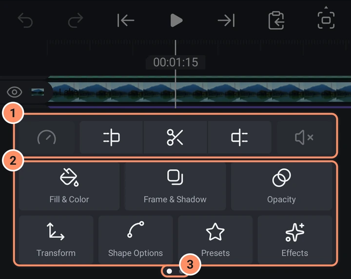
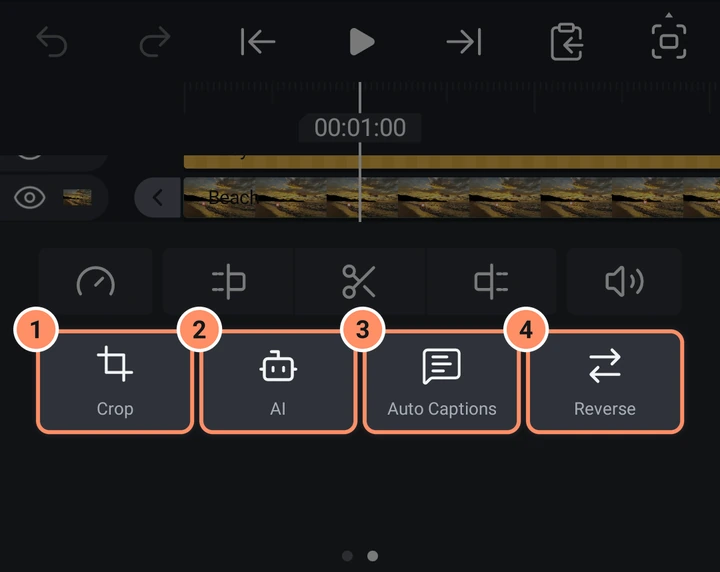
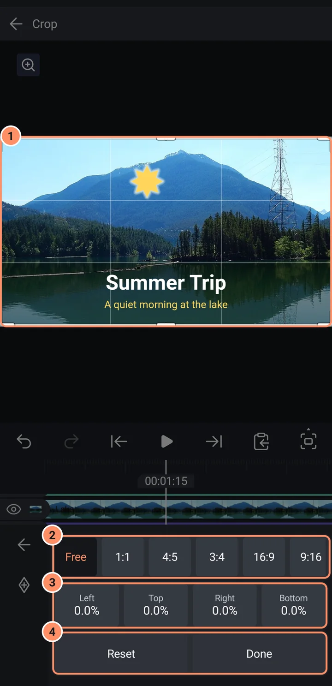
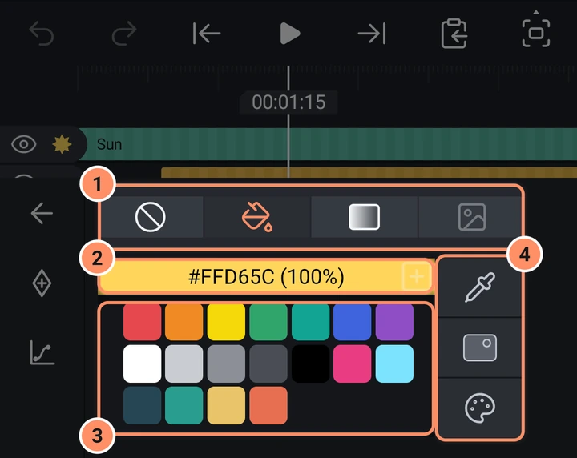

레이어 도구
레이어를 선택하면 나타나는 도구 격자와 그 뒤에 있는 모든 패널입니다.
레이어를 누르면 하단에 도구 격자가 열립니다. 첫 줄에는 작은 버튼 다섯 개(속도, 트림과 분할, 볼륨)가 있으며, 타임라인에서 설명합니다. 재생 헤드 위치에서 쓸 수 없는 트림이나 늘이기 버튼은 아예 표시되지 않습니다. 그 아래에는 레이어 종류에 따라 구성이 달라지는 큰 버튼들이 있습니다.
큰 버튼은 두 페이지로 나뉩니다. 격자를 옆으로 밀어 페이지를 옮기세요. 아래의 점 두 개가 현재 페이지를 나타냅니다. 페이지가 하나뿐인 레이어에는 점이 없습니다. 큰 태블릿에서는 도구가 미리보기 옆의 열에 한 페이지로 모이며, 모두 들어가도록 두 개에서 네 개의 열로 배치됩니다.

| 레이어 | 도구 |
|---|---|
| 도형, 사진, 동영상 | 채우기 및 색상, 테두리 및 그림자, 불투명도, 변형, 도형 옵션, 프리셋, 이펙트 |
| 경로 도형(펜, SVG, 여러 도형) | 같은 도구이며, 도형 옵션 대신 포인트 편집 |
| 텍스트 | 같은 도구이며, 도형 옵션 대신 텍스트 편집 |
| 드로잉 | 같은 도구이며, 도형 옵션 대신 그림 편집 |
| 그룹 | 채우기 및 색상, 테두리 및 그림자, 불투명도, 변형, 그룹 편집, 프리셋, 이펙트. 에셋에 연결된 그룹은 그룹 편집 대신 에셋 속성이 있으며, 배경 제거 (동영상)으로 만든 동영상 오려내기에는 대신 오려낸 영역의 가장자리가 있습니다 |
| 널 | 변형, 프리셋, 이펙트 |
| 카메라 | 카메라 옵션, 변형, 이펙트, 프리셋, 카메라 움직임 |
| 3D 모델 | 모델 옵션, 불투명도, 변형, 프리셋, 이펙트 |
| 조명 | 조명 옵션, 변형 |
| 오디오 | 프리셋, 이펙트(음성 필터 포함), 비트 표시, AI(잡음 줄이기 및 자동 자막) |
사진이나 동영상은 이미지 채우기를 가진 사각형이므로, 도형과 같은 도구를 가집니다.
위 표는 1페이지를 나타냅니다. 2페이지에는 3D 모델을 제외하고 보이는 모든 레이어(도형, 텍스트, 드로잉, 그룹, 사진, 동영상)의 자르기가 있습니다. 동영상 클립에는 여기에 버튼이 네 개 더 있습니다: AI, 자동 자막, 역방향, 스크린샷. 사진에도 여기에 AI가 있습니다. 프로젝트의 깊이 순서가 켜져 있으면, 도형, 사진, 동영상, 텍스트, 드로잉, 그룹의 2페이지는 3D 레이어부터 시작합니다. 카메라 레이어와 3D를 참고하세요. 오디오, 카메라, 조명, 널, 3D 모델 레이어는 페이지가 하나뿐입니다.

모든 패널
대부분의 패널은 왼쪽의 좁은 열을 공유하며, 이 열에는 다음 버튼이 있습니다: 뒤로, 키프레임 추가 또는 키프레임 삭제, 이징, 그리고 변형과 이펙트에서만 더보기. 회색 키프레임 버튼은 해당 설정을 애니메이션으로 만들 수 없다는 뜻입니다. 키프레임과 이징을 참고하세요.
숫자 칸을 누르면 숫자 패드가 열립니다. 처음 누르면 값 전체가 선택되므로, 입력한 내용이 값을 대체합니다. 체크 표시를 누르면 적용되고, 패드 밖을 누르면 닫힙니다. 눈금자(눈금과 가운데 바늘이 있는 띠)는 옆으로 드래그하면 숫자가 바뀝니다.
변형
오른쪽의 탭: 이동, 회전, 크기, 기울기, 기울이기, 기준점. 카메라에는 이동, 회전, 크기만 작동하며, 깊이 순서가 켜져 있으면 기울기도 작동합니다. 나머지 탭은 회색입니다. 도구에서 변형을 길게 누르거나 더보기를 열어 기본 제어(이동, 회전, 크기, 기울이기, 기본값)와 고급 제어(탭 여섯 개 모두) 사이를 전환할 수 있습니다.
- 이동. 트랙패드("여기를 드래그하여 레이어 이동")와 X, Y 칸. Z를 누르면 깊이 축을 따라 레이어를 움직입니다. 레이어가 캔버스나 다른 레이어와 맞춰질 때 얇은 빨간 안내선이 나타납니다.
- 회전. 다이얼입니다. 손잡이를 끌어 돌리거나 각도를 눌러 직접 입력할 수 있습니다. 레이어가 3D로 기울어져 있으면 이 탭은 3D 트랙패드가 되며, 한 손가락은 기울이고 두 손가락은 비틀 수 있습니다.
- 크기. 너비와 높이 칸, 그리고 비율을 유지하는 연결 버튼(기본으로 켜짐). 카메라에서는 이 탭이 시야각을 바꿉니다. 연결 설정은 레이어마다 기억되며 프로젝트와 함께 저장되고, 눈금자는 빠르게 밀어 올린 뒤에도 계속 미끄러집니다.
- 기울기. 3D 기울기를 위한 X 회전과 Y 회전(도 단위). 카메라 레이어와 3D를 참고하세요.
- 기울이기. 도 단위의 X 기울이기와 Y 기울이기.
- 기준점. 레이어가 회전하고 크기가 바뀌는 중심점입니다. 레이어 가운데에서부터 픽셀 단위로 표시됩니다. X와 Y를 입력하거나, 트랙패드를 드래그하거나, 아홉 개의 사각형(모서리, 가장자리, 가운데) 중 하나를 누르거나, 캔버스의 표시를 드래그하세요. 레이어와 그 하위 레이어는 제자리에 그대로 있습니다.
- 더보기에는 위치 초기화, 회전 초기화, 크기 초기화, 3D 회전 초기화, 기울이기 초기화, 기준점 초기화, 그리고 변형 초기화(여섯 개 탭 모두)가 있습니다.

이동은 위치이며, X, Y, Z가 함께 애니메이션으로 만들어집니다. 회전, 크기, 기울기, 기울이기, 기준점은 각각 자체 키프레임을 가지며, 너비와 높이는 크기 키프레임을 함께 씁니다.
자르기
사진, 동영상, 그 밖의 보이는 레이어에는 도구 격자 2페이지에 자르기 버튼이 있습니다. 잘려 나갈 부분은 어둡게 표시되며, 여덟 개의 손잡이가 있는 프레임이 나타납니다. 모서리나 가장자리를 드래그하면 잘리고, 프레임 안을 드래그하면 프레임이 움직입니다. 두 손가락으로는 여전히 캔버스를 확대할 수 있습니다. 자유, 1:1, 4:5, 3:4, 16:9, 9:16은 그 모양의 가장 큰 가운데 자르기 영역에 맞추고, 드래그하는 동안에도 그 모양을 유지합니다. 한 변을 눌러 값을 입력할 수 있고, 초기화는 자르기를 없애며, 완료는 패널을 닫습니다. 키프레임 버튼은 네 변을 함께 키프레임으로 만듭니다. 자르기는 자르기 이펙트이므로, 이펙트에서 둥글기와 페더로도 바꿀 수 있습니다. 레이어의 위치는 그대로 유지됩니다.

채우기 및 색상
상단 탭: 없음, 색상, 그라데이션, 미디어.
- 색상. 선택한 팔레트의 색(기본 팔레트에는 열네 개가 있습니다)과 저장한 색. 상단 막대에는 팔레트 이름이 표시되며, 누르면 내 팔레트가 열립니다. 색은 #RRGGBB 형식과 불투명도로 표시됩니다. 그 옆의 +는 현재 색을 저장합니다. 버튼은 세 개입니다: 스포이드(미리보기를 눌러 색을 추출), 색상 슬라이더, 전체 색상 선택기(색상환, 또는 HSV와 RGB 슬라이더와 16진수 입력란).
- 그라데이션. 선형, 방사형, 원뿔형 중 하나를 고른 뒤 시작 색과 끝 색을 고르세요. 미리보기의 두 핸들이 그라데이션을 움직입니다. 그라데이션은 색이 정확히 두 개입니다.
- 미디어. 도형이나 텍스트 레이어의 글자를 사진이나 동영상으로 채웁니다. 누르면 선택기가 열립니다.

채우기 및 색상의 색상 탭에 있는 색만 키프레임으로 만들 수 있습니다.
색상 팔레트
팔레트는 모든 프로젝트에서 쓸 수 있는 색 모음입니다. 채우기 및 색상의 색상 막대, 전체 색상 선택기, 그리고 이펙트 설정의 색상 팝업은 선택한 팔레트의 색을 보여 줍니다. 그곳에서 팔레트 이름을 누르면 팔레트가 열립니다.
- 팔레트를 누르면 사용합니다. 연필을 누르면 편집할 수 있습니다.
- 새로 만들기는 현재 선택한 색으로 팔레트를 만듭니다. 이미지에서 가져오기는 사진의 주요 색 8개로 팔레트를 만듭니다. AbsentMotion에서 내보낸 팔레트 이미지는 모든 색을 그대로 되돌려 줍니다. 파일에서 가져오기는 팔레트 파일을 읽습니다. GIMP
.gpl, Adobe.ase또는.act,.pal, 또는 16진수 색상 목록입니다. 예를 들어 Lospec에서 내려받을 수 있는 팔레트 같은 것입니다. - 열린 팔레트에서 이름을 누르면 이름을 바꿀 수 있고, 사용을 누르면 선택합니다. 색을 누르면 선택되며, 추가는 현재 색을 추가하고, 복제는 선택한 색을 복사하고, 삭제는 제거합니다. 정렬은 색을 색조, 명도 또는 채도 순서로 정렬합니다.
- 내보내기는 팔레트를 Pictures/AbsentMotion에 이미지 (PNG)로, 또는 Documents/AbsentMotion에 GIMP 팔레트 (.gpl)나 Adobe 색상 견본 (.ase)으로 저장합니다. 복사본 만들기는 편집할 수 있는 사본을 만들고, 팔레트 삭제는 확인을 묻고 삭제합니다.
- 잠금은 끌 때까지 색을 추가, 복제, 삭제하지 못하게 합니다.
기본 팔레트 8개가 들어 있습니다: 기본, 파스텔, 네온, 대지, 피부색, 회색조, PICO-8, Game Boy. 이 팔레트들은 영구적으로 잠겨 있으므로, 바꾸려면 복사본 만들기를 사용하세요. 기본 팔레트를 선택한 동안에는 저장한 색이 그 팔레트 다음에 표시되며, +는 저장한 색 쪽에 저장합니다. 직접 만든 팔레트를 선택한 동안에는 +가 그 팔레트에 색을 추가합니다(잠긴 경우는 제외).
컴퓨터에서는 .gpl, .ase, .act 또는 .pal 파일을 창에 끌어다 놓으세요. 그러면 내 팔레트에 추가되고 선택된 팔레트가 됩니다. 내 팔레트는 백업에도 저장됩니다. 프로젝트, 백업 및 가져오기를 참고하세요.
테두리 및 그림자
탭 세 개: 선, 테두리, 그림자.
- 선은 도형의 외곽선입니다. 스위치, 색상, 굵기, 선 끝과 꺾임 방식, 그리고 열린 선의 양 끝 모양(화살표, 원, 마름모 등)이 있습니다.
- 테두리는 원하는 만큼 겹쳐 쌓을 수 있습니다. 각 테두리에는 굵기, 색상, 위치(안쪽, 가운데, 바깥쪽)가 있습니다. 손잡이를 드래그하면 순서를 바꿀 수 있습니다. 테두리 추가는 하나를 추가합니다.
- 그림자에는 스위치, 색상, 크기, 알파, 위치(X와 Y)가 있습니다.
불투명도
불투명도 슬라이더와 백분율 칸, 그리고 일곱 그룹으로 나뉜 28가지 블렌딩 모드가 있습니다. 일반; 어둡게(곱하기, 어둡게, 더 어두운 색상, 색상 번, 선형 번); 밝게(스크린, 밝게, 더 밝은 색상, 색상 닷지, 선형 닷지); 대비(오버레이, 소프트 라이트, 하드 라이트, 소프트 오버레이, 비비드 라이트, 선형 라이트, 핀 라이트); 차이(차이, 제외, 빼기, 나누기); 색상(색조, 채도, 색상, 광도); 그리고 마스크(마스크, 제외). 그룹을 누르면 열리고, 모드를 누르면 적용됩니다. 마스크는 이 레이어가 있는 곳에만 아래 레이어를 남기며, 제외는 이 레이어가 있는 곳의 아래 레이어를 지웁니다.
도형 옵션
도형을 정의하는 설정이며, 행마다 눈금자와 값 칸이 하나씩 있습니다. 예: 원에는 크기가 있고, 둥근 사각형에는 크기와 반지름이 있으며, 다각형에는 변, 반지름, 각도가 있고, 별에는 꼭짓점, 외부 반지름, 내부 반지름, 각도가 있으며, 화살표에는 시작, 끝, 꼬리 너비, 머리 너비, 머리 길이가 있습니다. 선택한 행이 키프레임 버튼으로 애니메이션을 만드는 행입니다. 사진과 동영상은 여기서 크기를 사용합니다.
포인트 편집, 그림 편집, 텍스트 편집
이 버튼들은 전체 화면 편집기를 엽니다. 도형, 드로잉 및 마스크와 텍스트와 글꼴을 참고하세요.
그룹 편집
그룹을 열어, 타임라인과 미리보기에 그룹 안의 레이어만 보이게 하고 그 레이어들을 바꿀 수 있게 합니다. 도형, 드로잉 및 마스크를 참고하세요.
카메라 옵션, 조명 옵션, 모델 옵션
카메라 레이어와 3D를 참고하세요.
비트 표시
오디오 레이어에서 비트 표시는 소리의 모든 비트 위치에 북마크를 추가합니다. 레이어 메뉴의 비트 표시와 같은 동작입니다. 오디오를 참고하세요.
볼륨
소리와 동영상용입니다. 오디오를 참고하세요.
AI, 자동 자막, 역방향, 스크린샷
이 네 버튼은 동영상 클립 격자의 2페이지에 있습니다(GIF도 이 동영상 클립에 포함됩니다). AI는 이펙트 라이브러리의 AI 카테고리를 엽니다. 사진도 2페이지에 있으며(배경 제거용), 오디오 레이어는 유일한 페이지에 같은 버튼이 있습니다. 자동 자막은 이 클립만을 위한 자막을 만듭니다. AI 도구를 참고하세요. 역방향은 클립을 거꾸로 재생합니다. 미디어를 참고하세요.
스크린샷은 재생 헤드 아래의 클립 프레임을 클립의 원래 전체 크기 그림으로 저장합니다. 순수한 영상이므로 이펙트, 자르기, 테두리와 레이어 위치는 빠지며, 트림, 속도 변경, 역방향은 반영됩니다. 그림은 휴대전화의 갤러리(Pictures/AbsentMotion)에 저장되고, 클립 위에 새 레이어로 프로젝트에 추가됩니다. 10초 안에 그 새 레이어를 삭제하면 그림도 갤러리에서 함께 삭제됩니다. 재생 헤드가 클립 위에 있어야 합니다.
이펙트와 프리셋
이펙트 사용하기와 에셋, 템플릿, 프리셋을 참고하세요.